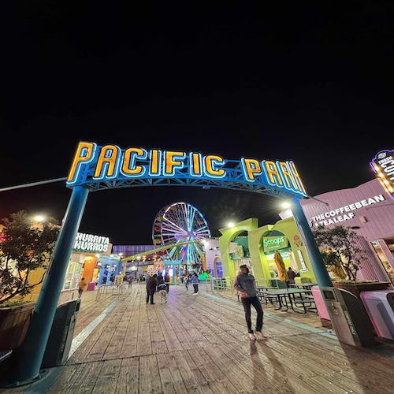

Santa Monica

Pacific Park
The park at the Santa Monica Pier feels like a dream caught between ocean waves and carnival lights. The laughter from the rides mixes with the sound of the sea, and the air smells like salt and cotton candy. At night, the whole place glows, the Ferris wheel spins like a slow-moving star, painting colors on the water below.